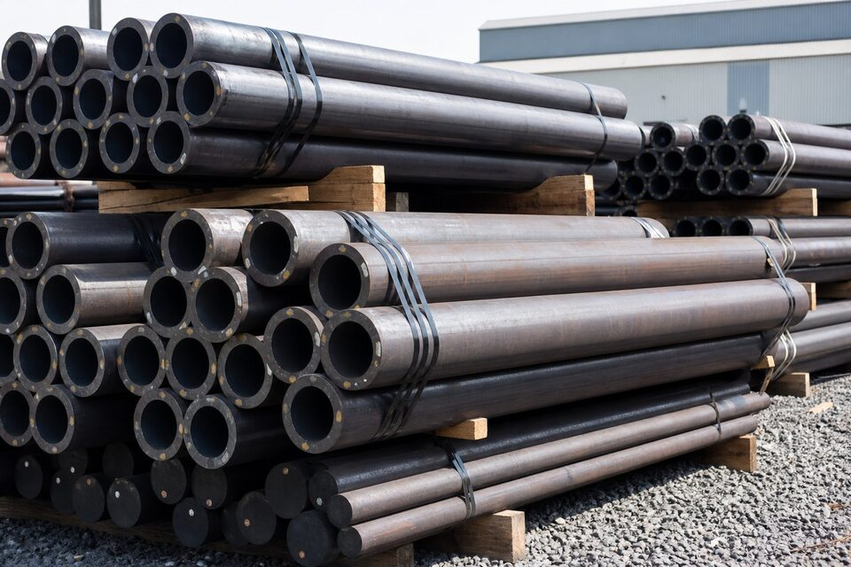

دو خانواده استاندارد: فلسفه و ساختار
استانداردهای (ASTM) محصول نظام استاندارد آمریکا هستند و در پایپینگ، مشخصات لولهها، اتصالات، فلنجها و سایر اقلام را تعریف میکنند؛ نامهایی مانند (A106)، (A333) یا (A234) در واقع مشخصات یک محصول با الزامات شیمیایی، مکانیکی و آزمون مشخصاند. در مقابل، (JIS) نظام استاندارد صنعتی ژاپن است که علاوه بر مشخصات متریال، استانداردهای ابعادی محصولات را نیز پوشش میدهد و نامگذاری آن با پیشوندهای حرفی مانند (G) برای آهن و فولاد انجام میشود. این تفاوت ساختاری یک نکته عملی دارد: در خانواده (ASTM)، ابعاد معمولا به استانداردهای دیگری مانند (ASME B36.10) ارجاع میشوند، اما در (JIS) خود استاندارد محصول، ابعاد را نیز تعیین میکند. بنابراین هنگام مقایسه یک لوله از هر خانواده، هم متریال و هم نظام ابعادی باید جداگانه بررسی شوند.

گریدهای پرمصرف و معادلهای نزدیک
در لولههای کربنی عمومی، گرید (A106 Gr.B) خانواده (ASTM) برای سرویس دمای بالا و (A53) برای کاربردهای عمومی شناخته شدهاند؛ در خانواده (JIS) نیز لولههای کربنی رایج برای سرویسهای فشاری و ساختاری وجود دارند. برای سرویس دمای پایین، (A333 Gr.6) مرجع آمریکایی است و معادلهای نزدیک آن در (JIS) با الزامات تست ضربه تعریف میشوند. در اتصالات نیز (A234 WPB) متداولترین گرید آمریکایی است که همتایان نزدیکی در نظامهای دیگر دارد. نکته کلیدی این است که این معادلسازیها، معادلهای نزدیکاند نه عینا یکسان: تفاوتهای کوچک در محدوده ترکیب شیمیایی یا حداقل استحکام ممکن است در سرویسهای حساس اهمیت پیدا کند. بنابراین در پروژههای حساس، معادلیابی باید توسط مهندسی متریال و بر اساس مدارک واقعی انجام شود.
تفاوتهای فنی کلیدی
- نظام ابعادی: (ASTM) معمولا به مراجع ابعادی جدا ارجاع میدهد؛ (JIS) ابعاد را در خود استاندارد محصول دارد.
- روش آزمون: تعداد و نوع آزمونهای مکانیکی و غیرمخرب در دو خانواده متفاوت است.
- نامگذاری فشار: کلاسهای فشار در فلنجها و اتصالات نظامهای مختلف با هم قابل مقایسه مستقیم نیستند.
- گواهیدهی: مدارک متریال و نظام تایید سازنده در هر اکوسیستم استاندارد، سازوکار خاص خود را دارد.
- محدوده پوشش: برخی محصولات در یک خانواده پوشش گستردهتری دارند و در دیگری با مراجع تکمیلی کامل میشوند.
در عمل، یکی از شایعترین اشتباهات، مقایسه عدد اسمی فشار یا ضخامت بدون توجه به نظام ابعادی پشت آن است. دو فلنج با عدد فشار مشابه در دو نظام ممکن است ابعاد نشیمن و سوراخکاری متفاوتی داشته باشند و به هم وصل نشوند. به همین دلیل در سفارشهایی که تجهیزات دو اکوسیستم استاندارد کنار هم قرار میگیرند، کنترل ابعاد اتصالپذیر باید قبل از خرید انجام شود، نه در زمان نصب.
ملاحظات جایگزینی در پروژهها
در پروژههای نوسازی و توسعه، گاهی به دلیل دسترسی بازار یا زمان تحویل، جایگزینی یک گرید استاندارد با گرید خانواده دیگر مطرح میشود. این تصمیم باید به صورت یک تغییر رسمی مهندسی مدیریت شود: بررسی تطبیق ترکیب شیمیایی و خواص مکانیکی، ارزیابی اثر بر جوشکاری و عملیات حرارتی، و کنترل ابعاد اتصال. نتیجه باید در کلاس پایپینگ و مدارک پروژه ثبت شود تا در بازرسیهای آینده قابل دفاع باشد. جایگزینی خودسرانه، حتی اگر در ظاهر کار کند، در بازرسی شخص ثالث یا ارزیابی عمر تجهیزات میتواند به عدم انطباق و توقف منجر شود. در پروژههای دارای وندورلیست و لایسنسور نیز هر تغییر متریال معمولا نیازمند تایید کتبی مرجع پروژه است.
راهنمای عملی برای خریداران
هنگام استعلام، همیشه کد حاکم پروژه و نسخه آن را ذکر کنید و اجازه ندهید فروشنده به صورت پیشفرض گرید دیگری پیشنهاد دهد؛ اگر پیشنهاد جایگزین ارائه شد، آن را به صورت مکتوب با مدارک متریال نمونه دریافت و به مهندسی ارجاع دهید. در مقایسه قیمتها نیز دقت کنید که پیشنهادهای مبتنی بر خانوادههای مختلف استاندارد، فقط زمانی قابل مقایسهاند که معادلسازی آنها تایید شده باشد. برای اقلام حساس، گواهی متریال با ذکر کامل آنالیز شیمیایی و نتایج مکانیکی را از مرحله نمونه بخواهید. و در نهایت، سوابق پروژههای مشابه فروشنده با همان خانواده استاندارد را بررسی کنید؛ تجربه ساخت با یک نظام استاندارد، همیشه به نظام دیگر منتقل نمیشود.
مستندسازی معادلسازی در پروژه
هر معادلسازی بین دو خانواده استاندارد باید به صورت یک مدرک رسمی در پروژه ثبت شود: تطبیق ترکیب شیمیایی و خواص مکانیکی، نتیجه ارزیابی جوشکاری و آزمونها و امضای مسئول مهندسی. این سند در بازرسیهای شخص ثالث، ممیزیهای کارفرما و ارزیابیهای عمر تجهیزات در آینده استفاده میشود و بدون آن، هر جایگزینی یک عدم انطباق بالقوه تلقی خواهد شد. در پروژههای بزرگ بهتر است جدول معادلسازی مصوب به بخشی از کلاسهای پایپینگ اضافه شود تا خریدهای بعدی نیز بر همان مبنا انجام شوند و از تکرار ارزیابیهای دوباره جلوگیری گردد.
جمعبندی
خانوادههای (ASTM) و (JIS) دو نظام استاندارد معتبر با فلسفه و ساختار متفاوتاند و هر دو در بازار پایپینگ حضور دارند. شناخت تفاوتهای ساختاری، دقت در معادلسازی گریدها و مدیریت رسمی تغییرات، کلید خرید مطمئن در پروژههایی است که این دو نظام در آنها همزیستاند.
سوالات رایج
تفاوت ریشهای این دو خانواده چیست؟
(ASTM) مجموعه استانداردهای آمریکایی است که مشخصات متریال و آزمون را برای هر محصول تعریف میکند؛ (JIS) نظام استاندارد ژاپنی است که علاوه بر متریال، ابعاد و رواداری محصولات را نیز پوشش میدهد.
آیا گریدهای این دو استاندارد معادلاند؟
در بسیاری موارد گریدهای نزدیک وجود دارند اما معادلسازی دقیق باید بر اساس ترکیب شیمیایی و خواص مکانیکی واقعی انجام شود؛ اکتفا به جداول عمومی معادلسازی پرریسک است.
در پروژههای ایرانی کدام رایجتر است؟
در صنایع نفت و گاز و پتروشیمی، خانواده (ASTM) با ارجاع به (ASME) غالب است؛ در برخی صنایع عمومی و تجهیزات وارداتی از شرق آسیا، (JIS) نیز دیده میشود.
جایگزینی یک گرید با گرید دیگر چه الزاماتی دارد؟
ارزیابی مهندسی تطبیق ترکیب شیمیایی، خواص مکانیکی، قابلیت جوشکاری و الزامات سرویس؛ و ثبت رسمی تغییر در مدارک پروژه و کلاس پایپینگ.
مطالب مرتبط
تامین لوله و اتصالات مطابق کلاس پایپینگ پروژه با گواهی متریال معتبر.
مشاهده صفحه محصول ← ثبت RFQ همین محصولتامین این تجهیزات را به پیشرو تجهیز فرتاک بسپارید
شرکت پیشرو تجهیز فرتاک تامینکننده تخصصی تجهیزات صنعتی برای پروژههای نفت، گاز، پتروشیمی، فولاد و نیروگاهی است. برای دریافت پیشنهاد فنی و قیمت، استعلام (RFQ) خود را ثبت کنید تا کارشناسان مهندسی فروش در کوتاهترین زمان پاسخ دهند.
- تامین تجهیزات صنایع نفت و گازپکیج مواد مطابق وندورلیست
- تامین تجهیزات پتروشیمیاقلام مکانیکال و ابزار دقیق